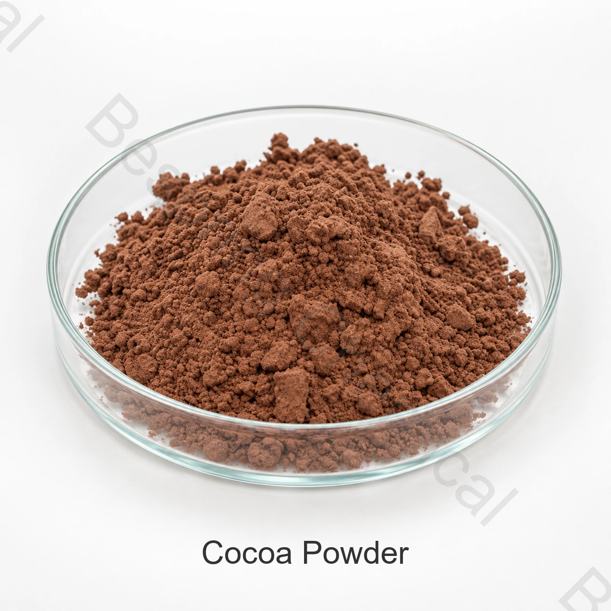

Lớp tự nhiên hay tập trung
Cho biết kiểu xử lý cần thiết và vai trò của nó trong công thức. So sánh mẫu cho hương vị, màu sắc và cách dùng khác thay vì chỉ chọn điểm tối.
Thành phần mức lương thực là · Cocoa thành phần · COCOA
Điểm số thương mại khác nhau về nội dung ca cao, chế biến tự nhiên hay alkalized, PH, màu sắc, hương vị, tinh tế và vi sinh học, nên việc chọn lọc lớp là đặc biệt.

Ảnh sản xuất # xác nhận cấp và bao bì khi đặt thứ tự
Chia sẻ điểm số chính xác, ứng dụng, số lượng, đóng gói, điểm đến và những tài liệu cần thiết.
LớpĐiểm thực phẩm, theo chính xác về nguồn lực
Chi tiếtTài liệu hiện có từ bán hàng
Đang góiXác nhận trong đề nghị đặc biệt nguồn
Bằng chứng bantchCOA hiện thời sẵn sàng cho các gói cung cấp
Đáp án sản phẩm trực tiếp
Điểm số thương mại khác nhau về nội dung ca cao, chế biến tự nhiên hay alkalized, PH, màu sắc, hương vị, tinh tế và vi sinh học, nên việc chọn lọc lớp là đặc biệt.
Tính hợp tác thương mại phụ thuộc vào nguồn chính xác, chức năng dự định, tiến trình thực phẩm đầy đủ và các quy tắc thị trường đích. Trang này hỗ trợ khả năng sơ bộ; tính năng đặc trưng và mẻ COA hiện thời được cung cấp bằng cách bán hàng chi phối trật tự.
Danh sách tiến trình
Hãy so sánh những quy định về cấp bậc, quy định ứng dụng và các điều khoản thương mại trước khi yêu cầu một mẫu hoặc đặt một mệnh lệnh.
Cho biết kiểu xử lý cần thiết và vai trò của nó trong công thức. So sánh mẫu cho hương vị, màu sắc và cách dùng khác thay vì chỉ chọn điểm tối.
Cung cấp hệ thống bỏ đi, trộn lẫn và nướng nướng, phân tích lượng ca cao trong công thức hoàn chỉnh vì sự thay đổi trong axit có thể ảnh hưởng đến sự cân bằng hình thành.
Mô tả sự ướt, pha trộn, sự đồng hóa và điều kiện lưu trữ. Phân hủy các cụm và trầm tích trong nước uống hoàn tất; không dùng bột ca cao bình thường như là hoàn toàn có thể lọc nước.
Tổng nội dung chất béo, cơ sở phân tích, độ tinh khiết và tiêu chuẩn vi sinh học cho nguồn chính xác. bao gồm số lượng, đóng gói, đích đến và mẫu màu được chấp nhận trong RFQ.
Kiểm tra ứng dụng
Đây là những khu vực thử nghiệm, không phải sự chấp thuận phổ biến, sự đề nghị liều lượng hoặc kết quả đảm bảo. xác nhận sử dụng pháp lý và hiệu quả kỹ thuật trong thực phẩm hoàn thành.
Thăng bằng độ dốc, sự bỏ lại, màu sắc, hương vị và độ ẩm trong công thức thực sự.
Đánh giá độ ẩm ướt, khả năng phân tán, trầm tích, hương vị, hệ thống đường và xử lý.
Khớp chất béo, độ tinh khiết, màu sắc và hương vị với chất bổ, lớp phủ và hệ thống hợp chất.
Màu màn hình, mùi vị tỏa ra, sự phân tán và vi sinh học cho quá trình dự định.
Chọn kỹ thuật
Cách điều trị thay đổi cảm giác, màu sắc và hương vị; đặt điểm chính xác trên RFQ.
So sánh điểm số trên một cơ sở thử nghiệm máy sấy đã đồng ý.
Sử dụng các mẫu vật lý và dụng cụ mà sự nhất quán rất quan trọng.
Đặt các tiêu chuẩn thích hợp và điều khiển cho quá trình chuyển hóa đồ ăn thấp.
Tài liệu kỹ thuật tư
Hóa chất Bespring không công bố chi tiết sản phẩm cho thành phần này trực tuyến. Liên lạc với đội bán hàng về đặc điểm đặc trưng mã nguồn hoặc TDS hiện thời và xác nhận rằng bản sửa đổi, phương pháp kiểm tra và tiêu chuẩn chấp nhận tương ứng với yêu cầu mua hàng của bạn.
Yêu cầu các đặc điểm đặc trưng hoặc TDS, SDS, các phương pháp phân tích, đại diện COA và các COA hàng loạt.
Kiểm tra khả năng an toàn thực phẩm, chất lượng, nguồn gốc, chất gây dị ứng, Kosher, Halal và các chứng chỉ trang web cho điểm và nguồn chính xác.
ôn lại Codex Standard cho Cocoa Powders (CXS 105-1981)sau đó áp dụng các quy tắc thị trường đích hiện tại vào chính xác các thực phẩm hoàn thành.
Ghi chú tương thích: Liên quan đến danh tính quốc tế không phải tự mình cho phép mọi ứng dụng. Người mua có trách nhiệm xác nhận phân loại thực phẩm, sử dụng cấp độ, nhãn hiệu tuyên bố và những điều kiện khác trong mỗi thị trường đích.
Lưu trữ và xử lý
Hỏi người mua
Bột cacao tự nhiên không xử lý kiềm. Kiềm hóa đổi độ axit và có thể đổi màu, hương vị. Chọn xử lý theo công thức cuối, hệ tạo nở và mục tiêu cảm quan được phê duyệt.
Không. Bột cacao chứa chất không tan, tạo hệ phân tán. Thử thấm ướt, trộn và lắng trong đồ uống thực; phân tán tức thì tùy cấp và công thức.
Chỉ định một phạm vi chất béo và cơ sở phân tích thích hợp với công thức đó. Nội dung chất béo không phải là chất tẩy hóa học. Yêu cầu đặc điểm mã nguồn hiện thời thay vì giả định mức chất béo thấp hoặc chất béo cao.
Việc đánh giá bánh nướng gồm có để lại và màu sắc; đánh giá nước uống cũng bao gồm việc ướt, phân tán và trầm tích trong lúc lưu trữ.
Cung cấp phương pháp điều trị tự nhiên hay alkalized, chất béo, mục tiêu màu và màu sắc, ứng dụng, số lượng, đóng gói và đích đến. yêu cầu đặc trưng hiện tại của nguồn cung cấp, đại diện COA và mẫu có sẵn.
Nội dung cập nhật 2026-09-13.
Phụ tùng liên quan
Duyệt danh mục đầu tư đầy đủ và hồ sơ kỹ thuật có sẵn.
Thảo luận về đặc điểm, tài liệu, yêu cầu mẫu và thương mại.
Xem xét lại việc cung cấp và hỗ trợ xuất khẩu cho các thành phần quốc tế.
Hướng dẫn ứng dụng liên quan: Sự phân tán và ổn định · Công việc làm ăn và làm đầy đủ ổn định · Chọn thành phần sô cô la.
Tìm nguồn dựa trên chỉ tiêu kỹ thuật
Chia sẻ điểm hoặc loại chính xác, ứng dụng, yêu cầu hiệu suất quan trọng, số lượng, đóng gói, đích đến và danh sách tài liệu cho một đề xuất có liên quan.
Cho chúng tôi biết điểm số và điểm đến của anh để chúng tôi có thể xác nhận tài liệu nào có sẵn cho đơn đặt hàng của anh.
Một tham chiếu bên ngoài không phải là một chứng nhận hàng loạt hoặc một đặc điểm sản phẩm Bespring.